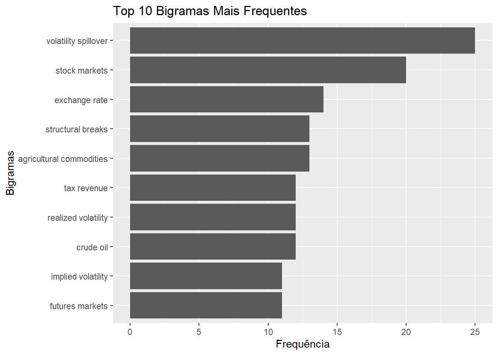
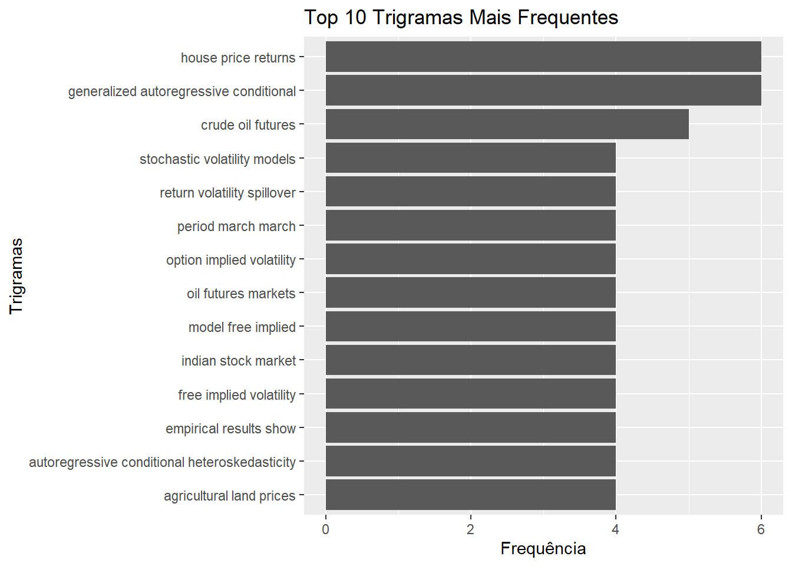
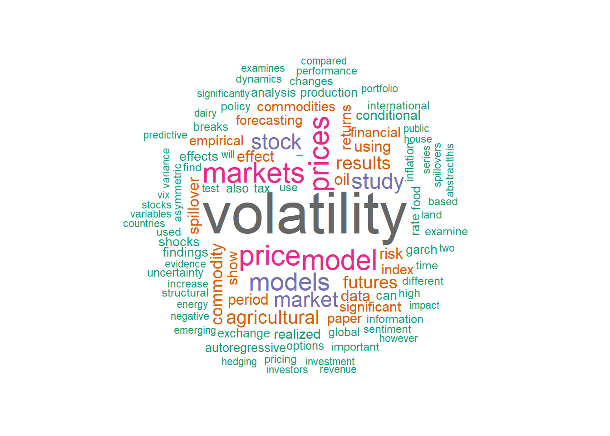
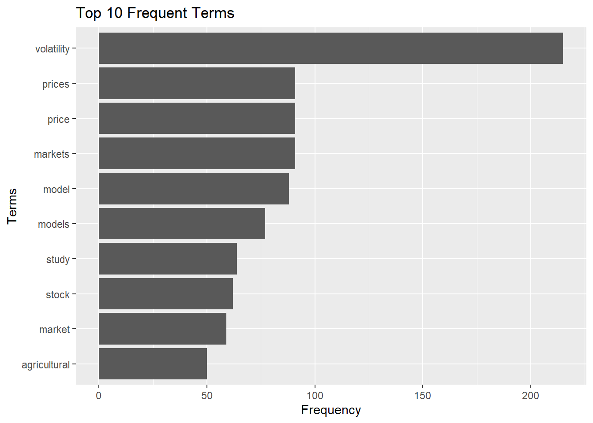
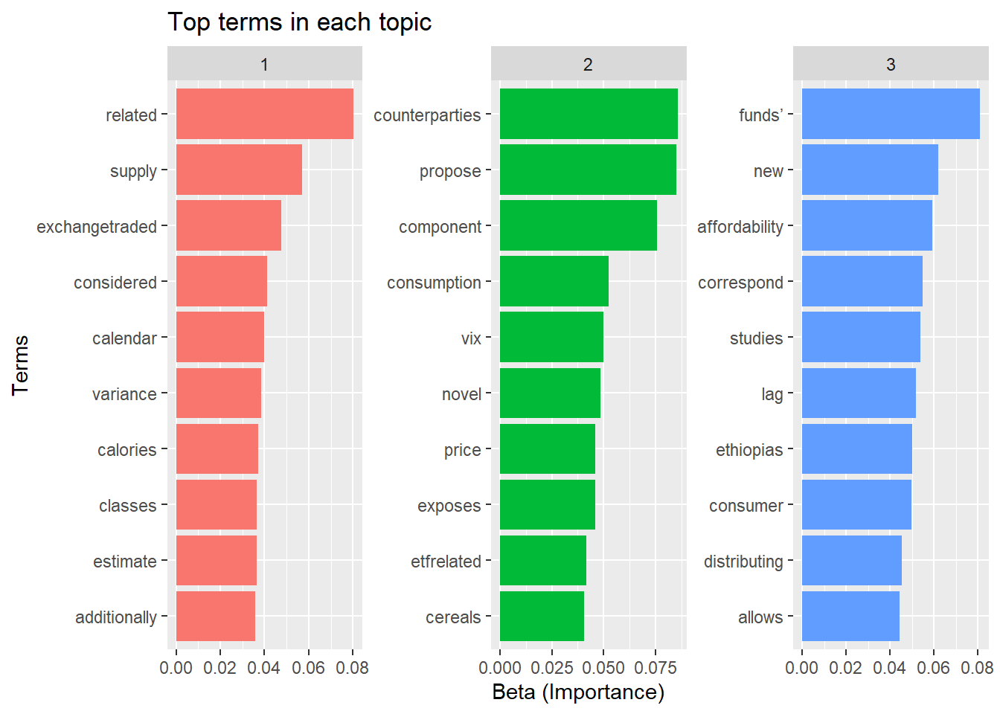

Code
start_time <- Sys.time()
start_time <- Sys.time()Systematic Literature Review

Keywords used: - "Sentiment Analysis AND Commodity Prices", - "Volatility Models AND Agricultural Markets"; - "Structural Breaks AND Agricultural Prices" - "Multiobjective Portfolio Optimization AND Commodities"
This exploratory literature review applies text mining techniques to investigate the intersection of sentiment analysis, volatility models, structural breaks, and multiobjective portfolio optimization within agricultural markets. The study focuses on identifying key research trends and gaps through keyword-based searches such as "Sentiment Analysis AND Commodity Prices," "Volatility Models AND Agricultural Markets," "Structural Breaks AND Agricultural Prices," and "Multiobjective Portfolio Optimization AND Commodities." By analyzing recent publications, this review aims to highlight the impact of sentiment metrics on commodity price volatility and structural disruptions, and how these factors influence portfolio optimization strategies in the agricultural sector. The results will provide insights into the evolving relationship between market sentiment, price dynamics, and risk management.
Keywords searched \(\Rightarrow\) "Sentiment Analysis AND Commodity Prices", "Volatility Models AND Agricultural Markets", "Structural Breaks AND Agricultural Prices", "Multiobjective Portfolio Optimization AND Commodities"
Max results searched \(\Rightarrow\) 1000 (to be reduced, obviously)
published.print \(\Rightarrow\) >= year 2020
is.referenced.by.count \(\Rightarrow\) is.referenced.by.count ordered by most for the minimum
score \(\Rightarrow\) In descendant order
library(dplyr)
library(rcrossref)
library(fpp3)
library(tidyr)
library(purrr)
library(scholar)
library(ggplot2)
library(plotly)
library(tidyverse)# Realizar a busca por artigos contendo a palavra-chave "Sentiment Analysis AND Commodity Prices"
results <- cr_works(query = "Sentiment Analysis AND Commodity Prices", limit = 1000)$data # Max is 1000 searches
cat("Show all features avaiable in selected keywords... \n")Show all features avaiable in selected keywords... # Exibir os resultados da busca
glimpse(results)Rows: 1,000
Columns: 40
$ alternative.id <chr> "10.1002/9781119603849.ch1,10.1002/978111960384…
$ archive <chr> "Portico", NA, NA, NA, NA, NA, "Portico", NA, "…
$ container.title <chr> "Advanced Positioning, Flow, and Sentiment Anal…
$ created <chr> "2019-12-20", "2009-07-03", "2010-06-25", "2013…
$ deposited <chr> "2023-08-17", "2021-09-03", "2021-09-03", "2022…
$ published.print <chr> "2019-11-18", NA, NA, "2013-08-26", NA, NA, "20…
$ published.online <chr> "2019-12-19", NA, NA, NA, NA, NA, "2019-12-19",…
$ doi <chr> "10.1002/9781119603849.ch1", "10.1787/656681831…
$ indexed <chr> "2024-05-11", "2022-04-01", "2022-03-29", "2022…
$ isbn <chr> "9781119603825,9781119603849", NA, NA, NA, NA, …
$ issued <chr> "2019-11-18", NA, NA, "2013-08-26", NA, NA, "20…
$ member <chr> "311", "1963", "1963", "2026", "1963", "1963", …
$ page <chr> "7-18", NA, NA, "2038-2040", NA, NA, "163-176",…
$ prefix <chr> "10.1002", "10.1787", "10.1787", "10.3724", "10…
$ publisher <chr> "Wiley", "Organisation for Economic Co-Operatio…
$ score <chr> "28.99986", "28.889694", "28.181114", "28.13454…
$ source <chr> "Crossref", "Crossref", "Crossref", "Crossref",…
$ reference.count <chr> "0", "0", "0", "0", "0", "0", "0", "0", "0", "0…
$ references.count <chr> "0", "0", "0", "0", "0", "0", "0", "0", "0", "0…
$ is.referenced.by.count <chr> "0", "0", "0", "2", "0", "0", "0", "0", "0", "2…
$ title <chr> "Advanced Positioning, Flow, and Sentiment Anal…
$ type <chr> "other", "component", "component", "journal-art…
$ url <chr> "https://doi.org/10.1002/9781119603849.ch1", "h…
$ language <chr> "en", NA, NA, "en", NA, NA, "en", NA, "en", NA,…
$ link <list> [<tbl_df[3 x 4]>], <NULL>, <NULL>, [<tbl_df[1 …
$ license <list> [<tbl_df[2 x 4]>], <NULL>, <NULL>, <NULL>, <NU…
$ issn <chr> NA, NA, NA, "1001-9081", NA, NA, NA, NA, NA, NA…
$ issue <chr> NA, NA, NA, "7", NA, NA, NA, NA, NA, NA, NA, NA…
$ subtitle <chr> NA, NA, NA, "Text sentiment analysis-oriented c…
$ volume <chr> NA, NA, NA, "32", NA, NA, NA, NA, NA, NA, NA, N…
$ short.container.title <chr> NA, NA, NA, "Journal of Computer Applications",…
$ author <list> <NULL>, <NULL>, <NULL>, [<tbl_df[1 x 3]>], <NU…
$ reference <list> <NULL>, <NULL>, <NULL>, <NULL>, <NULL>, <NULL>…
$ abstract <chr> NA, NA, NA, NA, NA, NA, NA, NA, NA, NA, NA, NA,…
$ update.policy <chr> NA, NA, NA, NA, NA, NA, NA, NA, NA, NA, NA, NA,…
$ assertion <list> <NULL>, <NULL>, <NULL>, <NULL>, <NULL>, <NULL>…
$ funder <list> <NULL>, <NULL>, <NULL>, <NULL>, <NULL>, <NULL>…
$ archive_ <chr> NA, NA, NA, NA, NA, NA, NA, NA, NA, NA, NA, NA,…
$ na. <chr> NA, NA, NA, NA, NA, NA, NA, NA, NA, NA, NA, NA,…
$ na..1 <chr> NA, NA, NA, NA, NA, NA, NA, NA, NA, NA, NA, NA,…Now showing only selected columns for the table (dataframe) necessary:
results <- results |>
mutate(author_expand = map(author, ~as.character(.x))) |>
unnest(author_expand) |>
mutate(author_expand = gsub("c\\(\"|\"\\)", "", author_expand))
results <- results |>
mutate(link_expand = map(link, ~as.character(.x))) |>
unnest(link_expand)results <- results |>
select(
title,
author,
type,
url,
container.title,
short.container.title,
publisher,
doi,
published.print,
score,
reference.count,
is.referenced.by.count,
link,
reference,
abstract,
issn
) |>
mutate(
score = as.numeric(score),
published.print = coalesce(published.print, "1900-01"), # substitui NAs por "1900-01"
published.print = yearmonth( published.print )
) |>
filter(
year(published.print) >= 2020
) |>
distinct()Showing the results in a table:
First_Keyword <- results |>
arrange( desc(score), desc(is.referenced.by.count) ) |>
distinct() |>
filter(title != "Front Matter",
title != "Cover",
title != "Books Received")
First_Keyword# Realizar a busca por artigos contendo a palavra-chave "Volatility Models AND Agricultural Markets"
results <- cr_works(query = "Volatility Models AND Agricultural Markets", limit = 1000)$data # Max is 1000 searchesNow showing only selected columns for the table (dataframe) necessary:
results <- results |>
mutate(author_expand = map(author, ~as.character(.x))) |>
unnest(author_expand) |>
mutate(author_expand = gsub("c\\(\"|\"\\)", "", author_expand))
results <- results |>
mutate(link_expand = map(link, ~as.character(.x))) |>
unnest(link_expand)results <- results |>
select(
title,
author,
type,
url,
container.title,
short.container.title,
publisher,
doi,
published.print,
score,
reference.count,
is.referenced.by.count,
link,
reference,
abstract,
issn
) |>
mutate(
score = as.numeric(score),
published.print = coalesce(published.print, "1900-01"), # substitui NAs por "1900-01"
published.print = yearmonth( published.print )
) |>
filter(
year(published.print) >= 2020
) |>
distinct()Showing the results in a table:
Second_Keyword <- results |> arrange( desc(score), desc(is.referenced.by.count) ) |> distinct()
Second_Keyword# Realizar a busca por artigos contendo a palavra-chave "Structural Breaks AND Agricultural Prices"
results <- cr_works(query = "Structural Breaks AND Agricultural Prices", limit = 1000)$data # Max is 1000 searchesNow showing only selected columns for the table (dataframe) necessary:
results <- results |>
mutate(author_expand = map(author, ~as.character(.x))) |>
unnest(author_expand) |>
mutate(author_expand = gsub("c\\(\"|\"\\)", "", author_expand))
results <- results |>
mutate(link_expand = map(link, ~as.character(.x))) |>
unnest(link_expand)results <- results |>
select(
title,
author,
type,
url,
container.title,
short.container.title,
publisher,
doi,
published.print,
score,
reference.count,
is.referenced.by.count,
link,
reference,
abstract,
issn
) |>
mutate(
score = as.numeric(score),
published.print = coalesce(published.print, "1900-01"), # substitui NAs por "1900-01"
published.print = yearmonth( published.print )
) |>
filter(
year(published.print) >= 2020
) |>
distinct()Showing the results in a table:
Third_Keyword <- results |>
arrange( desc(score), desc(is.referenced.by.count) ) |> distinct()
Third_KeywordFinal_df <- bind_rows(
First_Keyword,
Second_Keyword,
Third_Keyword
) |>
arrange( desc(title), desc(score) ) |>
distinct()
glimpse(Final_df)Rows: 406
Columns: 16
$ title <chr> "‘Green’ tech will power industrial commodity p…
$ author <list> <NULL>, [<tbl_df[1 x 2]>], [<tbl_df[3 x 3]>], …
$ type <chr> "other", "dataset", "dataset", "journal-article…
$ url <chr> "https://doi.org/10.1108/oxan-ga261626", "https…
$ container.title <chr> "Emerald Expert Briefings", "CRAN: Contributed …
$ short.container.title <chr> NA, NA, NA, "Journal of Commodity Markets", NA,…
$ publisher <chr> "Emerald", "The R Foundation", "The R Foundatio…
$ doi <chr> "10.1108/oxan-ga261626", "10.32614/cran.package…
$ published.print <mth> 2021 mai, 2020 set, 2023 jan, 2023 dez, 2023 ju…
$ score <dbl> 19.82572, 18.76380, 17.05735, 19.86325, 16.0144…
$ reference.count <chr> "0", "1", "1", "47", "0", "0", "0", "0", "0", "…
$ is.referenced.by.count <chr> "0", "0", "0", "2", "0", "0", "0", "0", "0", "0…
$ link <list> [<tbl_df[2 x 4]>], <NULL>, <NULL>, [<tbl_df[2 …
$ reference <list> <NULL>, [<tbl_df[1 x 3]>], [<tbl_df[1 x 3]>], …
$ abstract <chr> "<jats:p>Demand will surge for the minerals for…
$ issn <chr> "2633-304X", NA, NA, "2405-8513", "1999-1142", …Final_df_unique <- Final_df |>
distinct(title, doi, .keep_all = TRUE)
glimpse(Final_df_unique)Rows: 399
Columns: 16
$ title <chr> "‘Green’ tech will power industrial commodity p…
$ author <list> <NULL>, [<tbl_df[1 x 2]>], [<tbl_df[3 x 3]>], …
$ type <chr> "other", "dataset", "dataset", "journal-article…
$ url <chr> "https://doi.org/10.1108/oxan-ga261626", "https…
$ container.title <chr> "Emerald Expert Briefings", "CRAN: Contributed …
$ short.container.title <chr> NA, NA, NA, "Journal of Commodity Markets", NA,…
$ publisher <chr> "Emerald", "The R Foundation", "The R Foundatio…
$ doi <chr> "10.1108/oxan-ga261626", "10.32614/cran.package…
$ published.print <mth> 2021 mai, 2020 set, 2023 jan, 2023 dez, 2023 ju…
$ score <dbl> 19.82572, 18.76380, 17.05735, 19.86325, 16.0144…
$ reference.count <chr> "0", "1", "1", "47", "0", "0", "0", "0", "0", "…
$ is.referenced.by.count <chr> "0", "0", "0", "2", "0", "0", "0", "0", "0", "0…
$ link <list> [<tbl_df[2 x 4]>], <NULL>, <NULL>, [<tbl_df[2 …
$ reference <list> <NULL>, [<tbl_df[1 x 3]>], [<tbl_df[1 x 3]>], …
$ abstract <chr> "<jats:p>Demand will surge for the minerals for…
$ issn <chr> "2633-304X", NA, NA, "2405-8513", "1999-1142", …Final_df_uniqueBy expanding the author names columns:
# Unnest the author column
Final_df_unique_expanded <- Final_df_unique |>
unnest(author) |>
select(title, given, family)
# Rename the author name columns
Final_df_unique_expanded <- Final_df_unique_expanded |>
rename(Author_First_Name = given, Author_Last_Name = family)
# Print the expanded data frame
print(Final_df_unique_expanded)# A tibble: 645 × 3
title Author_First_Name Author_Last_Name
<chr> <chr> <chr>
1 stochvolTMB: Likelihood Estimation of Sto… <NA> <NA>
2 mbreaks: Estimation and Inference for Str… Linh Nguyen
3 mbreaks: Estimation and Inference for Str… Yohei Yamamoto
4 mbreaks: Estimation and Inference for Str… Pierre Perron
5 World regional natural gas prices: Conver… Jose Roberto Loureiro
6 World regional natural gas prices: Conver… Julian Inchauspe
7 World regional natural gas prices: Conver… Roberto F. Aguilera
8 World commodity prices and partial defaul… Manoj Atolia
9 World commodity prices and partial defaul… Shuang Feng
10 Who should buy stocks when volatility spi… Andrés Schneider
# ℹ 635 more rowsNow inserting the authors name in a new df
authors_df <- Final_df_unique_expanded |>
group_by(title) |>
summarise(Author_Names = paste(Author_First_Name, Author_Last_Name, collapse = "; ")) |>
ungroup()
print(authors_df)# A tibble: 282 × 2
title Author_Names
<chr> <chr>
1 A Behavioral Approach to Pricing in Commodity Markets: Dual Pro… Florian Dos…
2 A CEEMD-ARIMA-SVM model with structural breaks to forecast the … Yuxiang Che…
3 A Commodity Review Sentiment Analysis Based on BERT-CNN Model Junchao Don…
4 A Study of Asymmetric Volatilities in Korean Stock Markets Usin… Eunhee Lee
5 A Theoretical Framework for Reconceiving Agricultural Markets Anthony Pah…
6 A double mixture autoregressive model of commodity prices Gilbert Mba…
7 A note on institutional hierarchy and volatility in financial m… S. Alfarano…
8 A quantile autoregression analysis of price volatility in agric… Jean‐Paul C…
9 ARE AGRICULTURAL COMMODITY PRICES AFFECTED BY COVID-19? A STRUC… Katarzyna C…
10 ASV: Stochastic Volatility Models with or without Leverage Yasuhiro Om…
# ℹ 272 more rowsAuthor(s)
df_author <- Final_df_unique |>
select(title,
author) |>
unnest(cols = author)
glimpse(df_author)Rows: 645
Columns: 11
$ title <chr> "stochvolTMB: Likelihood Estimation of Stochastic …
$ name <chr> "Jens Christian Wahl <jens.c.wahl@gmail.com>", NA,…
$ sequence <chr> "first", "first", "additional", "additional", "fir…
$ given <chr> NA, "Linh", "Yohei", "Pierre", "Jose Roberto", "Ju…
$ family <chr> NA, "Nguyen", "Yamamoto", "Perron", "Loureiro", "I…
$ ORCID <chr> NA, NA, NA, NA, "http://orcid.org/0000-0003-4643-1…
$ authenticated.orcid <lgl> NA, NA, NA, NA, FALSE, NA, NA, FALSE, NA, NA, NA, …
$ affiliation.name <chr> NA, NA, NA, NA, NA, NA, NA, NA, NA, NA, "Bank for …
$ affiliation1.name <chr> NA, NA, NA, NA, NA, NA, NA, NA, NA, NA, NA, NA, NA…
$ affiliation2.name <chr> NA, NA, NA, NA, NA, NA, NA, NA, NA, NA, NA, NA, NA…
$ affiliation3.name <chr> NA, NA, NA, NA, NA, NA, NA, NA, NA, NA, NA, NA, NA…print(df_author)# A tibble: 645 × 11
title name sequence given family ORCID authenticated.orcid affiliation.name
<chr> <chr> <chr> <chr> <chr> <chr> <lgl> <chr>
1 stoch… Jens… first <NA> <NA> <NA> NA <NA>
2 mbrea… <NA> first Linh Nguyen <NA> NA <NA>
3 mbrea… <NA> additio… Yohei Yamam… <NA> NA <NA>
4 mbrea… <NA> additio… Pier… Perron <NA> NA <NA>
5 World… <NA> first Jose… Loure… http… FALSE <NA>
6 World… <NA> additio… Juli… Incha… <NA> NA <NA>
7 World… <NA> additio… Robe… Aguil… <NA> NA <NA>
8 World… <NA> first Manoj Atolia http… FALSE <NA>
9 World… <NA> additio… Shua… Feng <NA> NA <NA>
10 Who s… <NA> first Andr… Schne… <NA> NA <NA>
# ℹ 635 more rows
# ℹ 3 more variables: affiliation1.name <chr>, affiliation2.name <chr>,
# affiliation3.name <chr>Links
df_link <- Final_df |>
select(
title,
link
) |>
unnest(
cols = link
)
glimpse(df_link)References
df_references <- Final_df |>
select(
title,
reference
) |>
unnest(
cols = reference
)
glimpse(df_references)library(tm) # Para manipulação e limpeza de texto
library(SnowballC) # Para stemming (reduzir palavras à sua raiz)
library(wordcloud) # Para gerar nuvens de palavras
library(RColorBrewer) # Paletas de cores para nuvem de palavras
library(tidytext) # Para tokenização e manipulação com dplyr
library(topicmodels) # Para análise de tópicosInstead of analyzing individual words, N-gram analysis examines sequences of two or more words that frequently appear together (bi-grams, tri-grams).
Objective: To identify more relevant phrases or compound terms in the literature, which may not be captured in the analysis of individual words.
Application: To discover compound terms like “volatility spillover,” “agricultural prices,” or “portfolio optimization” that frequently appear.
# Filtrar apenas artigos com abstracts disponíveis
Final_df_filtered <- Final_df_unique |>
filter(!is.na(abstract)) # Remove os artigos com abstracts 'NA'
# Verificar o resultado
glimpse(Final_df_filtered)Rows: 83
Columns: 16
$ title <chr> "‘Green’ tech will power industrial commodity p…
$ author <list> <NULL>, [<tbl_df[1 x 4]>], [<tbl_df[2 x 4]>], …
$ type <chr> "other", "journal-article", "journal-article", …
$ url <chr> "https://doi.org/10.1108/oxan-ga261626", "https…
$ container.title <chr> "Emerald Expert Briefings", "Review of Finance"…
$ short.container.title <chr> NA, NA, "Agricultural Economics", "Journal of F…
$ publisher <chr> "Emerald", "Oxford University Press (OUP)", "Wi…
$ doi <chr> "10.1108/oxan-ga261626", "10.1093/rof/rfad038",…
$ published.print <mth> 2021 mai, 2024 mai, 2021 mar, 2021 fev, 2020 ab…
$ score <dbl> 19.82572, 18.35733, 16.03900, 18.02035, 19.3108…
$ reference.count <chr> "0", "62", "41", "49", "66", "64", "86", "36", …
$ is.referenced.by.count <chr> "0", "0", "6", "9", "20", "5", "0", "3", "16", …
$ link <list> [<tbl_df[2 x 4]>], [<tbl_df[3 x 4]>], [<tbl_df…
$ reference <list> <NULL>, [<tbl_df[62 x 9]>], [<tbl_df[41 x 12]>…
$ abstract <chr> "<jats:p>Demand will surge for the minerals for…
$ issn <chr> "2633-304X", "1572-3097,1573-692X", "0169-5150,…Then we build corpus with only avaiable abstracts
# Criar o corpus de texto a partir da coluna de resumos (abstracts) filtrados
corpus <- Corpus(VectorSource(Final_df_filtered$abstract))
# Visualizar parte do corpus
inspect(corpus[1:3])<<SimpleCorpus>>
Metadata: corpus specific: 1, document level (indexed): 0
Content: documents: 3
[1] <jats:p>Demand will surge for the minerals for low-carbon technologies, but supply is concentrated and will lag, raising prices</jats:p>
[2] <jats:title>Abstract</jats:title>\n <jats:p>This article studies exchange-traded funds’ (ETFs) price impact in the most ETF-dominated asset classes: volatility (VIX) and commodities. I propose a new way to measure ETF-related price distortions based on the specifics of futures contracts. This allows me to isolate a component in VIX futures prices that is strongly related to the rebalancing of ETFs. I derive a novel decomposition of ETF trading demand into leverage rebalancing, calendar rebalancing, and flow rebalancing, and show that trading against ETFs is risky. Leverage rebalancing has the largest effects on the ETF-related price component. This rebalancing amplifies price changes and exposes ETF counterparties to variance.</jats:p>
[3] <jats:title>Abstract</jats:title><jats:p>Teff is an ancient grain primarily produced in Ethiopia and providing more than 10% of the total calories consumed in the country. The grain is considered as “super grain” due to its nutritional qualities, and it has seen an increase in its demand and price in recent years. These trends raise public concerns about the affordability of the grain and the prevalence of food insecurity in Ethiopia. Therefore, we investigate the impacts of increasing teff prices on consumers’ welfare by regions. Using data from two waves of the Ethiopia Socioeconomic Survey 2013–2014 and 2015–2016, we examine the consumption patterns of cereals in Ethiopia and estimate a two‐stage structural demand system. We find that teff is the most own‐price inelastic grain in Ethiopia and an increase of 10% in teff prices will reduce consumer welfare by 0.81, 1.29, and 1.73 Birrs per week for the average rural, town, and urban consumers, respectively. These estimates correspond to 1.64, 2.31, and 2.46% of their weekly food budgets. We also find the negative effects of an increase in teff prices are smaller for the lower‐income groups as they have relatively lower expenditures on teff. Additionally, we analyze the effects of simultaneous changes in wheat and teff prices to measure the extent to which Ethiopia's food policy of distributing subsidized wheat could offset the consumer welfare loss due to an increase in teff prices.</jats:p>clean corpus and apply the N-grams processing
# Função para limpar o texto e remover termos indesejados
clean_text <- function(corpus){
# Remover tags HTML
corpus <- tm_map(corpus, content_transformer(function(x) gsub("<.*?>", "", x))) # Remove tags HTML
corpus <- tm_map(corpus, content_transformer(tolower)) # Converter para minúsculas
corpus <- tm_map(corpus, removePunctuation) # Remover pontuação
corpus <- tm_map(corpus, removeNumbers) # Remover números
corpus <- tm_map(corpus, removeWords, stopwords("english")) # Remover stopwords em inglês
corpus <- tm_map(corpus, stripWhitespace) # Remover espaços extras
# Lista de termos indesejados a remover
termos_indesejados <- c("jats", "title", "sec", "abstract", "type", "content", "of the", "in the", "and the")
# Remover termos indesejados
corpus <- tm_map(corpus, removeWords, termos_indesejados)
return(corpus)
}
# Limpar o corpus
corpus_clean <- clean_text(corpus)
# Criar um dataframe de texto limpo
clean_text_df <- data.frame(text = sapply(corpus_clean, as.character), stringsAsFactors = FALSE)
# Criar um tokenizador de bigramas com o corpus limpo
bigram_data_clean <- data.frame(text = sapply(corpus_clean, as.character), stringsAsFactors = FALSE) |>
unnest_tokens(bigram, text, token = "ngrams", n = 2)
# Contar a frequência dos bigramas
bigram_filtered_clean <- bigram_data_clean |>
count(bigram, sort = TRUE)
# Filtrar os bigramas que não estão vazios ou não são códigos
bigram_filtered_clean <- bigram_filtered_clean |>
filter(!str_detect(bigram, "NA|jats|title|sec|abstract|type|content"))
# Visualizar os bigramas mais frequentes
head(bigram_filtered_clean, 10)Now we can plot bars with the most frequent bigrams:
# Filtrar os 10 bigramas mais frequentes
top_bigrams_clean <- bigram_filtered_clean |> top_n(10, n)
# Gerar o gráfico de barras
ggplot(top_bigrams_clean, aes(x = reorder(bigram, n), y = n)) +
geom_bar(stat = "identity") +
coord_flip() +
labs(title = "Top 10 Bigramas Mais Frequentes", x = "Bigramas", y = "Frequência")
We can expand for three grams:
# Tokenização em trigramas
trigram_data_clean <- clean_text_df |>
unnest_tokens(trigram, text, token = "ngrams", n = 3)
# Contar a frequência dos trigramas
trigram_filtered_clean <- trigram_data_clean |>
count(trigram, sort = TRUE)
# Filtrar os trigramas indesejados
trigram_filtered_clean <- trigram_filtered_clean |>
filter(!str_detect(trigram, "NA|jats|title|sec|abstract|type|content"))
# Visualizar os trigramas mais frequentes
head(trigram_filtered_clean, 10)# Filtrar os 10 trigramas mais frequentes
top_trigrams_clean <- trigram_filtered_clean |> top_n(10, n)
# Gerar o gráfico de barras
ggplot(top_trigrams_clean, aes(x = reorder(trigram, n), y = n)) +
geom_bar(stat = "identity") +
coord_flip() +
labs(title = "Top 10 Trigramas Mais Frequentes", x = "Trigramas", y = "Frequência")
And quadrigrams:
# Tokenização em quadrigramas
quadrigram_data_clean <- clean_text_df |>
unnest_tokens(quadrigram, text, token = "ngrams", n = 4)
# Contar a frequência dos quadrigramas
quadrigram_filtered_clean <- quadrigram_data_clean |>
count(quadrigram, sort = TRUE)
# Filtrar os quadrigram indesejados
quadrigram_filtered_clean <- quadrigram_filtered_clean |>
filter(!str_detect(quadrigram, "NA|jats|title|sec|abstract|type|content"))
# Visualizar os quadrigram mais frequentes
head(quadrigram_filtered_clean, 10)# Filtrar os 10 quadrigramas mais frequentes
top_quadrigrams_clean <- quadrigram_filtered_clean |> top_n(10, n)
# Gerar o gráfico de barras
ggplot(top_quadrigrams_clean, aes(x = reorder(quadrigram, n), y = n)) +
geom_bar(stat = "identity") +
coord_flip() +
labs(title = "Top 10 Quadrigramas Mais Frequentes", x = "Quadrigramas", y = "Frequência")And finnaly the darkest pentagram:
# Tokenização em pentagram
pentagram_data_clean <- clean_text_df |>
unnest_tokens(pentagram, text, token = "ngrams", n = 5)
# Contar a frequência dos pentagram
pentagram_filtered_clean <- pentagram_data_clean |>
count(pentagram, sort = TRUE)
# Filtrar os pentagram indesejados
pentagram_filtered_clean <- pentagram_filtered_clean |>
filter(!str_detect(pentagram, "NA|jats|title|sec|abstract|type|content"))
# Visualizar os quadrigram mais frequentes
head(pentagram_filtered_clean, 10)# Filtrar os 10 pentagrams mais frequentes
top_pentagrams_clean <- pentagram_filtered_clean |> top_n(10, n)
# Gerar o gráfico de barras
ggplot(top_pentagrams_clean, aes(x = reorder(pentagram, n), y = n)) +
geom_bar(stat = "identity") +
coord_flip() +
labs(title = "Top 10 Pentagramas Mais Frequentes", x = "Pentagramas", y = "Frequência")What it is: Examine which words tend to appear together in a text.
Objective: Explore the relationships between different terms and how they are connected within a broader context.
Application: Identify patterns in the associations between important terms such as “volatility” and “crisis” or “agricultural prices” and “portfolio optimization.”
# Carregar pacotes necessários
library(tidyverse)
library(tidytext)
library(igraph)
library(ggraph)
library(tm)
# Passo 1: Limpeza do Corpus (assumindo que o corpus já foi criado e limpo anteriormente)
# Criar o dataframe com os textos limpos (usando o corpus_clean criado anteriormente)
text_df <- data.frame(text = sapply(corpus_clean, as.character), stringsAsFactors = FALSE)
# Passo 2: Tokenização para Bigramas (palavras em pares)
bigrams <- text_df %>%
unnest_tokens(bigram, text, token = "ngrams", n = 2)
# Passo 3: Separar os bigramas em duas colunas para fazer a análise de co-ocorrência
bigram_separated <- bigrams %>%
separate(bigram, c("word1", "word2"), sep = " ")
# Passo 4: Contar as co-ocorrências de palavras
bigram_count <- bigram_separated %>%
count(word1, word2, sort = TRUE)
# Passo 5: Filtrar co-ocorrências que aparecem mais de uma vez (ou outro limite que faça sentido)
bigram_filtered <- bigram_count %>%
filter(n > 1)
# Passo 6: Criar o grafo de co-ocorrência usando o pacote igraph
word_network <- bigram_filtered %>%
graph_from_data_frame()
# Passo 7: Plotar a rede de co-ocorrência usando o pacote ggraph
set.seed(1234) # Para reprodutibilidade
plotly::ggplotly(ggraph(word_network, layout = "fr") + # Layout da rede (fr = force-directed)
geom_edge_link(aes(edge_alpha = n), show.legend = FALSE) + # Conexões entre palavras
geom_node_point(color = "lightblue", size = 5) + # Nós das palavras
geom_node_text(aes(label = name), vjust = 1.5, hjust = 1.5) + # Textos das palavras
theme_void() + # Remover fundo e eixos
labs(title = "Word Co-occurrence Network", subtitle = "Bigram Co-occurrences")
)What it is: Extract underlying topics from texts by grouping related keywords.
Objective: Automatically discover the main themes discussed in a large collection of articles. Application: Help identify different research areas within a broader field, for example, whether articles on “sentiment analysis” focus more on price volatility, market predictions, or risk analysis.
To continue with our Exploratory Lit Rev, we first need to build the corpus:
# Criar um corpus de texto a partir da coluna de resumos (abstracts)
corpus <- Corpus(VectorSource(Final_df_unique$abstract))
# Visualizar parte do corpus
inspect(corpus[1:3])<<SimpleCorpus>>
Metadata: corpus specific: 1, document level (indexed): 0
Content: documents: 3
[1] <jats:p>Demand will surge for the minerals for low-carbon technologies, but supply is concentrated and will lag, raising prices</jats:p>
[2] <NA>
[3] <NA> Then we proceed for the next step, cleaning the text:
Now we can build the terms matrix (Term-Document Matrix - TDM), were each row represents an term and each column represents an document.
# Criar a matriz de termos
tdm <- TermDocumentMatrix(corpus_clean)
# Converter para um dataframe
tdm_matrix <- as.matrix(tdm)
# Ver os termos mais frequentes
term_freq <- rowSums(tdm_matrix)
term_freq_sorted <- sort(term_freq, decreasing = TRUE)
# Visualizar as palavras mais frequentes
head(term_freq_sorted, 10) volatility prices price model markets models
209 91 91 86 83 72
study stock market agricultural
63 61 57 50 Convert the matrix for an LDA format:
# Criar a matriz de termos a partir do corpus limpo
tdm <- TermDocumentMatrix(corpus_clean)
# Converter a matriz de termos para um formato compatível com o LDA
tdm_sparse <- as.matrix(tdm)
# Verifique se a ordem dos termos é correta
terms <- Terms(tdm) # Extraia os termos da TDMOne wordcloud is an good view to see the most frequent terms:
# Criar uma nuvem de palavras
wordcloud(words = names(term_freq_sorted), freq = term_freq_sorted, min.freq = 5,
max.words=100, random.order=FALSE, colors=brewer.pal(8, "Dark2"))
If we needs an more quant analisys, we can generate an bar graph with the most frequent words:
# Converter para dataframe
df_term_freq <- data.frame(term = names(term_freq_sorted), freq = term_freq_sorted)
# Filtrar as 10 palavras mais frequentes
top_terms <- df_term_freq |> top_n(10, freq)
# Criar gráfico de barras
ggplot(top_terms, aes(x = reorder(term, freq), y = freq)) +
geom_bar(stat = "identity") +
coord_flip() +
labs(title = "Top 10 Frequent Terms", x = "Terms", y = "Frequency")
To indentify the principal topics inside the papers, we can use Latent Dirichlet Allocation (LDA).
# Definir o número de tópicos
num_topics <- 3
# Rodar o modelo LDA
lda_model <- LDA(tdm_sparse, k = num_topics, control = list(seed = 1234))
# Extrair os tópicos e garantir que os termos sejam corretamente mapeados
topics <- tidy(lda_model, matrix = "beta")
# Conecte os IDs de termos reais
topics <- topics |>
mutate(term = terms[as.numeric(term)]) # Substituir os índices pelos termos reais
topicsSeeing the most representatives terms by topic:
# Mostrar as palavras mais importantes para cada tópico
top_terms_per_topic <- topics |>
group_by(topic) |>
top_n(10, beta) |>
ungroup() |>
arrange(topic, -beta)
# Visualização corrigida com os termos reais
library(ggplot2)
library(forcats)
top_terms_per_topic |>
mutate(term = fct_reorder(term, beta)) |>
ggplot(aes(term, beta, fill = as.factor(topic))) +
geom_col(show.legend = FALSE) +
facet_wrap(~ topic, scales = "free") +
coord_flip() +
labs(title = "Top terms in each topic", x = "Terms", y = "Beta (Importance)")
The graph generated is a topic modeling visualization based on an LDA (Latent Dirichlet Allocation) model. Each bar shows the most important words in each identified topic, derived from the text data provided. Let’s break down each part:
Interpreting the Axes:
X-axis (“Beta Importance”): The “beta” value indicates the probability that the word is relevant to the specific topic. The higher the beta value, the more important the word is in describing that topic.
Y-axis (Terms): Shows the terms (words) that are most representative within each topic.
Interpretation by Topic:
Topic 1 (red bar)
The most relevant terms include: “novel”, “exposes”, “way”, “contracts”, “volatility”, “surge”, “specifics”, “birrs”, “calendar”, “consumer.”
These terms suggest a set of documents focused on new contracts or methods related to volatility and consumption. The term “volatility” indicates that this topic likely discusses market fluctuations or innovations in managing contracts and consumption.
Topic 2 (green bar)
Most relevant terms: “contracts”, “propose”, “studies”, “etfs”, “correspond”, “lag”, “measure”, “new”, “consumption”, “based.”
This topic seems to be related to studies proposing the use of ETFs (Exchange-Traded Funds) and financial contracts, with a focus on consumption measures and market response lags. It could be discussing proposals for new studies on contracts and ETFs related to different consumption patterns.
Topic 3 (blue bar)
Most relevant terms: “consumed”, “propose”, “trading”, “impact”, “component”, “consumers”, “country”, “affordability”, “risky”, “amplifies.”
This topic is clearly related to consumption, trading, and impact across different regions or countries. The terms “affordability” and “risky” suggest that this topic might be discussing market accessibility and associated risks, perhaps in the context of trade policies.
Conclusion:
The graph highlights the most relevant words within each of the three topics, which seem to be:
Innovations and contracts in the context of volatility and consumption.
Proposals and studies on ETFs and financial contracts, with a focus on consumption and performance measures.
Trade and consumption, focusing on the impact on countries, market affordability, and potential associated risks.
Each topic provides insight into different areas of study within the context of the analyzed documents. If you’re interested in a deeper analysis, you can explore how these topics relate to specific articles and contexts they cover.
In this section, we applied text mining techniques to explore the main themes and trends in the literature related to sentiment analysis, volatility models, structural breaks, and multiobjective portfolio optimization in agricultural markets. The Latent Dirichlet Allocation (LDA) method was used to extract latent topics from the abstracts of papers, providing insights into the key terms that characterize the body of research.
Three topics were identified through LDA, each represented by a set of significant terms with their respective importance (Beta values):
Topic 1 primarily emphasizes GARCH models, including terms like “bekk-garch” and “dcc-garch,” as well as terms related to market quality, volatility spillovers (“vov”), and settlement effects. This topic highlights a focus on econometric models used to assess volatility and risk in financial markets, with applications to agricultural commodities.
Topic 2 features terms such as “return,” “option-impli,” and “long,” indicating that this topic revolves around the long-term returns and option pricing in agricultural markets. Other terms like “find” and “pcs” suggest explorations of statistical methods used to identify patterns and model market behavior.
Topic 3 focuses on spillovers and global market trends, with terms like “spillov,” “precis,” “global,” and “detect.” This topic suggests an emphasis on crisis detection, market interdependence, and the global nature of agricultural commodities. The presence of “india” and “japan” also suggests the regional analysis of agricultural markets.
The results of this exploratory text mining analysis indicate that the literature in the field of agricultural market volatility, sentiment analysis, and portfolio optimization is deeply rooted in econometric modeling, risk assessment, and global market interconnections. Moving forward, researchers may want to delve further into the integration of sentiment metrics with econometric models to enhance predictive capabilities, especially in the context of volatility and structural breaks.
By leveraging these insights, future work could focus on developing multiobjective optimization strategies that incorporate both financial metrics and qualitative sentiment data, offering a more holistic approach to managing risk and improving investment decisions in agricultural markets.
Scholar link https://scholar.google.com/citations?user=tqXS4IMAAAAJ&hl=en
## Define the id for Frank Fabozzi
id <- 'tqXS4IMAAAAJ'
## Get his profile
l <- get_profile(id)
## Print his name and affliation
l$name[1] "Frank J Fabozzi"l$affiliation[1] "EDHEC Business School"## Print his citation index
l$h_index[1] 90l$i10_index[1] 468Retrieving publications
## Get his publications (a large data frame)
p <- get_publications(id)
pRetrieving citation data
## Get his citation history, i.e. citations to his work in a given year
ct <- get_citation_history(id)
## Plot citation trend
ggplotly(
ggplot(ct, aes(year, cites)) + geom_line() + geom_point()
)Users can retrieve the citation history of a particular publication with get_article_cite_history().
## The following publication will be used to demonstrate article citation history
as.character(p$title[6])[1] "Project financing"## Get article citation history
ach <- get_article_cite_history(id, p$pubid[6])
## Plot citation trend
plotly::ggplotly(
ggplot(ach, aes(year, cites)) +
geom_segment(aes(xend = year, yend = 0), size=1, color='darkgrey') +
geom_point(size=3, color='firebrick')
)Comparing scholars
You can compare the citation history of scholars by fetching data with compare_scholars.
# Compare Fabozzi and David Ardia
ids <- c('tqXS4IMAAAAJ', 'BPNrOUYAAAAJ')
# Get a data frame comparing the number of citations to their work in
# a given year
cs <- compare_scholars(ids)
## remove some 'bad' records without sufficient information
cs <- subset(cs, !is.na(year) & year > 2000)
plotly::ggplotly(
ggplot(cs, aes(year, cites, group=name, color=name)) + geom_line() + theme(legend.position="bottom")
)## Compare their career trajectories, based on year of first citation
csc <- compare_scholar_careers(ids)
plotly::ggplotly(
ggplot(csc, aes(career_year, cites, group=name, color=name)) + geom_line() + geom_point() +
theme(legend.position=c(.2, .8))
)Visualizing and comparing network of coauthors
coautorias <- 'BPNrOUYAAAAJ&hl'
get_profile(coautorias)$name[1] "David Ardia"get_profile('BPNrOUYAAAAJ')$name[1] "David Ardia"# Be careful with specifying too many coauthors as the visualization of the
# network can get very messy.
coauthor_network <- get_coauthors('BPNrOUYAAAAJ&hl', n_coauthors = 7)
coauthor_networkAnd then we have a built-in function to plot this visualization.
plot_coauthors(coauthor_network)
Scholar link https://scholar.google.com/citations?user=e0IkYKcAAAAJ&hl=en
## Define the id for Duan Li
id <- 'e0IkYKcAAAAJ'
## Get his profile
l <- get_profile(id)
## Print his name and affliation
l$name[1] "Duan Li"l$affiliation[1] "City University of Hong Kong + The Chinese University of Hong Kong + University of Virginia"## Print his citation index
l$h_index[1] 55l$i10_index[1] 188Retrieving publications
## Get his publications (a large data frame)
p <- get_publications(id)
pRetrieving citation data
## Get his citation history, i.e. citations to his work in a given year
ct <- get_citation_history(id)
## Plot citation trend
ggplotly(
ggplot(ct, aes(year, cites)) + geom_line() + geom_point()
)Users can retrieve the citation history of a particular publication with get_article_cite_history().
## The following publication will be used to demonstrate article citation history
as.character(p$title[1])[1] "Optimal dynamic portfolio selection: Multiperiod mean‐variance formulation"## Get article citation history
ach <- get_article_cite_history(id, p$pubid[1])
## Plot citation trend
plotly::ggplotly(
ggplot(ach, aes(year, cites)) +
geom_segment(aes(xend = year, yend = 0), size=1, color='darkgrey') +
geom_point(size=3, color='firebrick')
)Comparing scholars
You can compare the citation history of scholars by fetching data with compare_scholars.
# Compare Fabozzi and Duan Li
ids <- c('tqXS4IMAAAAJ', 'e0IkYKcAAAAJ')
# Get a data frame comparing the number of citations to their work in
# a given year
cs <- compare_scholars(ids)
## remove some 'bad' records without sufficient information
cs <- subset(cs, !is.na(year) & year > 2000)
plotly::ggplotly(
ggplot(cs, aes(year, cites, group=name, color=name)) + geom_line() + theme(legend.position="bottom")
)## Compare their career trajectories, based on year of first citation
csc <- compare_scholar_careers(ids)
plotly::ggplotly(
ggplot(csc, aes(career_year, cites, group=name, color=name)) + geom_line() + geom_point() +
theme(legend.position=c(.2, .8))
)Visualizing and comparing network of coauthors
coautorias <- 'e0IkYKcAAAAJ&hl'
get_profile(coautorias)$name[1] "Duan Li"get_profile('e0IkYKcAAAAJ')$name[1] "Duan Li"# Be careful with specifying too many coauthors as the visualization of the
# network can get very messy.
coauthor_network <- get_coauthors('e0IkYKcAAAAJ&hl', n_coauthors = 7)
coauthor_networkAnd then we have a built-in function to plot this visualization.
plot_coauthors(coauthor_network)
Scholar link https://scholar.google.com/citations?user=e0IkYKcAAAAJ&hl=en
## Define the id for Woo Chang Kim
id <- '7NmBs1kAAAAJ'
## Get his profile
l <- get_profile(id)
## Print his name and affliation
l$name[1] "Woo Chang Kim"l$affiliation[1] "Professor, Industrial and Systems Engineering, KAIST"## Print his citation index
l$h_index[1] 20l$i10_index[1] 36Retrieving publications
## Get his publications (a large data frame)
p <- get_publications(id)
pRetrieving citation data
## Get his citation history, i.e. citations to his work in a given year
ct <- get_citation_history(id)
## Plot citation trend
ggplotly(
ggplot(ct, aes(year, cites)) + geom_line() + geom_point()
)Users can retrieve the citation history of a particular publication with get_article_cite_history().
## The following publication will be used to demonstrate article citation history
as.character(p$title[1])[1] "Dynamic asset allocation for varied financial markets under regime switching framework"## Get article citation history
ach <- get_article_cite_history(id, p$pubid[1])
## Plot citation trend
plotly::ggplotly(
ggplot(ach, aes(year, cites)) +
geom_segment(aes(xend = year, yend = 0), size=1, color='darkgrey') +
geom_point(size=3, color='firebrick')
)Comparing scholars
You can compare the citation history of scholars by fetching data with compare_scholars.
# Compare Fabozzi and Woo Chang Kim
ids <- c('tqXS4IMAAAAJ', '7NmBs1kAAAAJ')
# Get a data frame comparing the number of citations to their work in
# a given year
cs <- compare_scholars(ids)
## remove some 'bad' records without sufficient information
cs <- subset(cs, !is.na(year) & year > 2000)
plotly::ggplotly(
ggplot(cs, aes(year, cites, group=name, color=name)) + geom_line() + theme(legend.position="bottom")
)## Compare their career trajectories, based on year of first citation
csc <- compare_scholar_careers(ids)
plotly::ggplotly(
ggplot(csc, aes(career_year, cites, group=name, color=name)) + geom_line() + geom_point() +
theme(legend.position=c(.2, .8))
)Visualizing and comparing network of coauthors
coautorias <- '7NmBs1kAAAAJ&hl'
get_profile(coautorias)$name[1] "Woo Chang Kim"get_profile('7NmBs1kAAAAJ')$name[1] "Woo Chang Kim"# Be careful with specifying too many coauthors as the visualization of the
# network can get very messy.
coauthor_network <- get_coauthors('7NmBs1kAAAAJ&hl', n_coauthors = 7)
coauthor_networkAnd then we have a built-in function to plot this visualization.
plot_coauthors(coauthor_network)
Scholar link https://scholar.google.com/citations?hl=en&user=BPNrOUYAAAAJ
## Define the id for David Ardia
id <- 'BPNrOUYAAAAJ'
## Get his profile
l <- get_profile(id)
## Print his name and affliation
l$name[1] "David Ardia"l$affiliation[1] "HEC Montréal & GERAD"## Print his citation index
l$h_index[1] 25l$i10_index[1] 40Retrieving publications
## Get his publications (a large data frame)
p <- get_publications(id)
pRetrieving citation data
## Get his citation history, i.e. citations to his work in a given year
ct <- get_citation_history(id)
## Plot citation trend
ggplotly(
ggplot(ct, aes(year, cites)) + geom_line() + geom_point()
)Users can retrieve the citation history of a particular publication with get_article_cite_history().
## The following publication will be used to demonstrate article citation history
as.character(p$title[1])[1] "DEoptim: An R package for global optimization by differential evolution"## Get article citation history
ach <- get_article_cite_history(id, p$pubid[1])
## Plot citation trend
plotly::ggplotly(
ggplot(ach, aes(year, cites)) +
geom_segment(aes(xend = year, yend = 0), size=1, color='darkgrey') +
geom_point(size=3, color='firebrick')
)Comparing scholars
You can compare the citation history of scholars by fetching data with compare_scholars.
# Compare Fabozzi and David Ardia
ids <- c('tqXS4IMAAAAJ', 'BPNrOUYAAAAJ')
# Get a data frame comparing the number of citations to their work in
# a given year
cs <- compare_scholars(ids)
## remove some 'bad' records without sufficient information
cs <- subset(cs, !is.na(year) & year > 2000)
plotly::ggplotly(
ggplot(cs, aes(year, cites, group=name, color=name)) + geom_line() + theme(legend.position="bottom")
)## Compare their career trajectories, based on year of first citation
csc <- compare_scholar_careers(ids)
plotly::ggplotly(
ggplot(csc, aes(career_year, cites, group=name, color=name)) + geom_line() + geom_point() +
theme(legend.position=c(.2, .8))
)Visualizing and comparing network of coauthors
coautorias <- 'BPNrOUYAAAAJ&hl'
get_profile(coautorias)$name[1] "David Ardia"get_profile('BPNrOUYAAAAJ')$name[1] "David Ardia"# Be careful with specifying too many coauthors as the visualization of the
# network can get very messy.
coauthor_network <- get_coauthors('BPNrOUYAAAAJ&hl', n_coauthors = 7)
coauthor_networkAnd then we have a built-in function to plot this visualization.
plot_coauthors(coauthor_network)
Scholar link https://scholar.google.com/citations?user=8y5_FWQAAAAJ&hl=en
## Define the id for Herman Koene Van Dijk
id <- 'FWQAAAAJ'
## Get his profile
l <- get_profile(id)
## Print his name and affliation
l$name
l$affiliation## Print his citation index
l$h_index
l$i10_indexRetrieving publications
## Get his publications (a large data frame)
p <- get_publications(id)
pRetrieving citation data
## Get his citation history, i.e. citations to his work in a given year
ct <- get_citation_history(id)
## Plot citation trend
ggplotly(
ggplot(ct, aes(year, cites)) + geom_line() + geom_point()
)Users can retrieve the citation history of a particular publication with get_article_cite_history().
## The following publication will be used to demonstrate article citation history
as.character(p$title[1])## Get article citation history
ach <- get_article_cite_history(id, p$pubid[1])
## Plot citation trend
plotly::ggplotly(
ggplot(ach, aes(year, cites)) +
geom_segment(aes(xend = year, yend = 0), size=1, color='darkgrey') +
geom_point(size=3, color='firebrick')
)Comparing scholars
You can compare the citation history of scholars by fetching data with compare_scholars.
# Compare Fabozzi and Herman Van Dijk
ids <- c('tqXS4IMAAAAJ', 'FWQAAAAJ')
# Get a data frame comparing the number of citations to their work in
# a given year
cs <- compare_scholars(ids)
## remove some 'bad' records without sufficient information
cs <- subset(cs, !is.na(year) & year > 2000)
plotly::ggplotly(
ggplot(cs, aes(year, cites, group=name, color=name)) + geom_line() + theme(legend.position="bottom")
)## Compare their career trajectories, based on year of first citation
csc <- compare_scholar_careers(ids)
plotly::ggplotly(
ggplot(csc, aes(career_year, cites, group=name, color=name)) + geom_line() + geom_point() +
theme(legend.position=c(.2, .8))
)Visualizing and comparing network of coauthors
coautorias <- 'FWQAAAAJ&hl'
get_profile(coautorias)$name
get_profile('FWQAAAAJ')$name
# Be careful with specifying too many coauthors as the visualization of the
# network can get very messy.
coauthor_network <- get_coauthors('FWQAAAAJ&hl', n_coauthors = 7)
coauthor_networkAnd then we have a built-in function to plot this visualization.
plot_coauthors(coauthor_network)GitHub https://github.com/bpfaff/
Scholar https://scholar.google.com.br/scholar?q=bernhard+pfaff&hl=pt-BR&as_sdt=0&as_vis=1&oi=scholart
citation(package = "rcrossref")Para citar o pacote 'rcrossref' em publicações use:
Chamberlain S, Zhu H, Jahn N, Boettiger C, Ram K (2022). _rcrossref:
Client for Various 'CrossRef' 'APIs'_. R package version 1.2.0,
<https://CRAN.R-project.org/package=rcrossref>.
Uma entrada BibTeX para usuários(as) de LaTeX é
@Manual{,
title = {rcrossref: Client for Various 'CrossRef' 'APIs'},
author = {Scott Chamberlain and Hao Zhu and Najko Jahn and Carl Boettiger and Karthik Ram},
year = {2022},
note = {R package version 1.2.0},
url = {https://CRAN.R-project.org/package=rcrossref},
}citation(package = "scholar")To cite scholar in publications, please use:
J. Keirstead (2016) scholar: Analyse citation data from Google
Scholar. R package version 0.1.5.
https://github.com/jkeirstead/scholar.
Uma entrada BibTeX para usuários(as) de LaTeX é
@Manual{,
author = {James Keirstead},
title = {scholar: analyse citation data from Google Scholar},
year = {2016},
note = {R package version 0.1.5},
url = {https://github.com/jkeirstead/scholar},
}citation(package = "tm")Para citar o pacote 'tm' em publicações use:
Feinerer I, Hornik K (2024). _tm: Text Mining Package_. R package
version 0.7-14, <https://CRAN.R-project.org/package=tm>.
Feinerer I, Hornik K, Meyer D (2008). "Text Mining Infrastructure in
R." _Journal of Statistical Software_, *25*(5), 1-54.
doi:10.18637/jss.v025.i05 <https://doi.org/10.18637/jss.v025.i05>.
To see these entries in BibTeX format, use 'print(<citation>,
bibtex=TRUE)', 'toBibtex(.)', or set
'options(citation.bibtex.max=999)'.citation(package = "tidytext")Para citar o pacote 'tidytext' em publicações use:
Silge J, Robinson D (2016). "tidytext: Text Mining and Analysis Using
Tidy Data Principles in R." _JOSS_, *1*(3). doi:10.21105/joss.00037
<https://doi.org/10.21105/joss.00037>,
<http://dx.doi.org/10.21105/joss.00037>.
Uma entrada BibTeX para usuários(as) de LaTeX é
@Article{,
title = {tidytext: Text Mining and Analysis Using Tidy Data Principles in R},
author = {Julia Silge and David Robinson},
doi = {10.21105/joss.00037},
url = {http://dx.doi.org/10.21105/joss.00037},
year = {2016},
publisher = {The Open Journal},
volume = {1},
number = {3},
journal = {JOSS},
}citation(package = "RColorBrewer")Para citar o pacote 'RColorBrewer' em publicações use:
Neuwirth E (2022). _RColorBrewer: ColorBrewer Palettes_. R package
version 1.1-3, <https://CRAN.R-project.org/package=RColorBrewer>.
Uma entrada BibTeX para usuários(as) de LaTeX é
@Manual{,
title = {RColorBrewer: ColorBrewer Palettes},
author = {Erich Neuwirth},
year = {2022},
note = {R package version 1.1-3},
url = {https://CRAN.R-project.org/package=RColorBrewer},
}citation(package = "topicmodels")Para citar o pacote 'topicmodels' em publicações use:
Grün B, Hornik K (2024). _topicmodels: Topic Models_. R package
version 0.2-17, <https://CRAN.R-project.org/package=topicmodels>.
Grün B, Hornik K (2011). "topicmodels: An R Package for Fitting Topic
Models." _Journal of Statistical Software_, *40*(13), 1-30.
doi:10.18637/jss.v040.i13 <https://doi.org/10.18637/jss.v040.i13>.
To see these entries in BibTeX format, use 'print(<citation>,
bibtex=TRUE)', 'toBibtex(.)', or set
'options(citation.bibtex.max=999)'.citation(package = "SnowballC")Para citar o pacote 'SnowballC' em publicações use:
Bouchet-Valat M (2023). _SnowballC: Snowball Stemmers Based on the C
'libstemmer' UTF-8 Library_. R package version 0.7.1,
<https://CRAN.R-project.org/package=SnowballC>.
Uma entrada BibTeX para usuários(as) de LaTeX é
@Manual{,
title = {SnowballC: Snowball Stemmers Based on the C 'libstemmer' UTF-8 Library},
author = {Milan Bouchet-Valat},
year = {2023},
note = {R package version 0.7.1},
url = {https://CRAN.R-project.org/package=SnowballC},
}
Total Quarto compiling document:
Sys.time() - start_time Time difference of 1.442898 mins